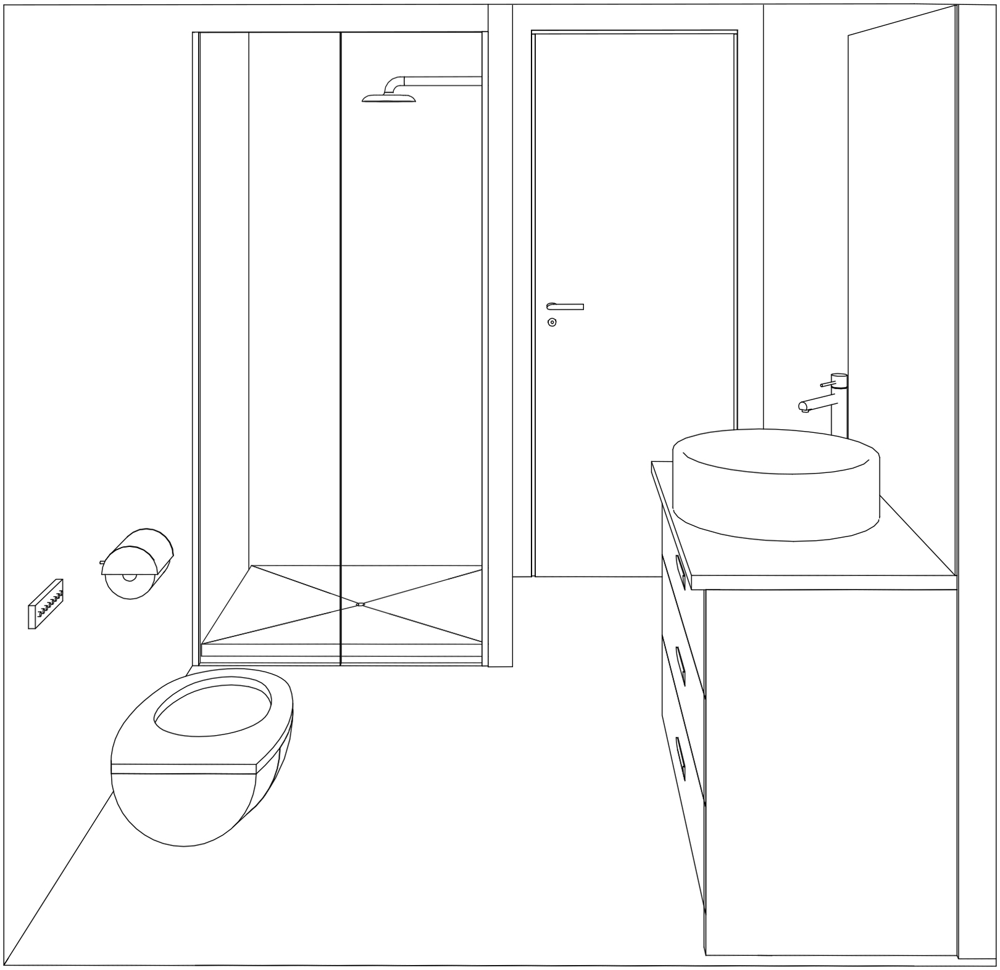

Bagno

Vista tridimensionale della sala da bagno situata al piano superiore tra il salotto e la camera da letto. L'acciaio cromato utilizzato per la rubinetteria e gli accessori crea, con la sua lucentezza,
un contrasto costruttivo con i materiali e colori del bagno che sono pochi, minimali e per lo più opachi. Il wc, modello giapponese, è dotato di bidet integrato e di altre funzionalità accessibili dalla pulsantiera a muro.